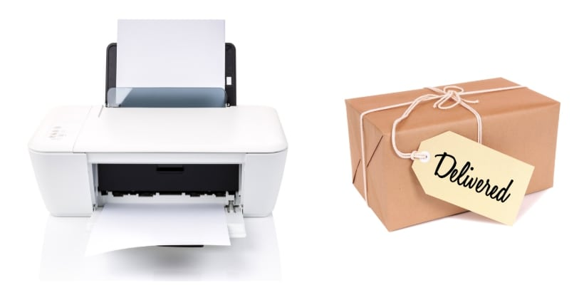

<section class="mt-50 mb-50">
        <div class="container">
          <div class="row">
            <div class="col-md-12">
              <div class="container-sm">
                
                <h2 class="font-weight-bold">Download multiple copies or just one.</h2>
                <h4>In Corjl, you/your customers can personalize one label and then  download with multiple copies onto the same page as a PDF. This saves time from having to personalize the same item over and over. </h4>
                <h4>You can also download just one label as a JPG or transparent PNG. This is handy if you’ll be using the labels or tags for a certain template in another program. </h4>
                
                <h2 class="font-weight-bold mt-50">Works for both printed and digital tags and labels.</h2>
                <h4>Whether you print and ship items to customers or let customers download and print, Corjl will work for you! </h4>
                <h4>If selling digital files, you can allow customers to download and print their items after editing, plus choose which formats they can use when downloading (PDF, JPG or PNG). </h4>
                <h4>If selling printed labels or tags, you can set up an item so that customers won’t see the option to download and print after personalizing. Instead, they will mark their item as complete, then you’ll be able to see which items are ready to process.</h4>
                
                
                <h2 class="font-weight-bold mt-50">Lots of features for both you and your customers.</h2>
                <h4>There are many features in Corjl that you’ll love and that will help you when assembling your designs such as: </h4>
                  <ul class="custom-bullet">
                    <li><span>The ability to bulk upload and tag elements</span></li>
                    <li><span>Custom artboards</span></li>
                    <li><span>Color pallet selection</span></li>
                    <li><span>Mobile editing</span></li>
                    <li><span>Much more!</span></li>
                  </ul>
                <h4>Downloading is easy and comes with a lot of options. Finished invitations can be downloaded as a single PDF, JPG or PNG, or downloaded as a PDF with multiple copies per page. Customers can choose paper size and can download individual pages, if desired. Also, customers can choose to include bleed and trim marks, if provided by you.</h4>
                <h2 class="font-weight-bold mt-50">Works for both printed and digital invitations.</h2>
                <h4>Whether you print and ship items to customers or let customers download and print, Corjl will work for you!</h4>
                <h4>If you sell digital invitations, you can allow customers to download and print their items after editing, plus choose which formats they can use when downloading (PDF, JPG or PNG).</h4>
                <h4>If you sell printed invitations, you can set up an item so that customers won’t see the option to download and print after personalizing. Instead, they will mark their item as complete, then you’ll be able to see which items are ready to proces</h4>
                
                <div class="text-center mt-30 mb-30">
                <span class="mr-10">
                  <a href="https://www.corjl.com/designer/register?p=M28QX" target="_blank" class="waves-effect waves-light btn pink font-weight-bold">Start Creating Editable Gift Tags - 7 Day Free Trial</a>
                </span>
              </div>
              </div>
            </div>
          </div>
        </div>
        <div class="add-class" style="background-color: #000"></div>
      </section>


<% url('/asset/images/gift-tags-and-labels/printable-gift-tags-labels.jpg') %>
  
  
  
<# Section Editing #>
<% include('/block/pages/gift-tags-and-labels/section-editing') %>
<# Section How To #>
<% include('/block/pages/gift-tags-and-labels/section-how-to') %>
<# Section Features #>
<% include('/block/pages/t-shirt-clothing/section-features') %>
<# Section Designer Control #>
<% include('/block/pages/t-shirt-clothing/section-designer-control') %>

  